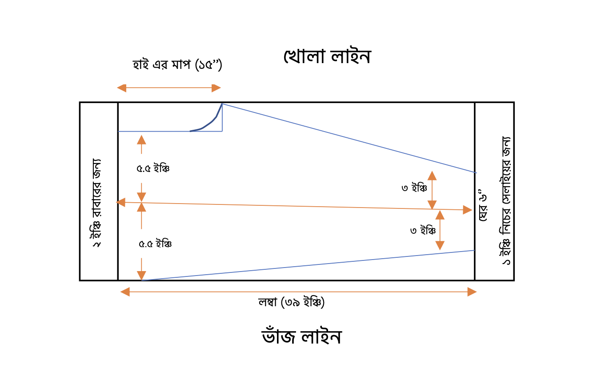

প্যান্ট কাট সেলোয়ার প্যাটার্ন ডায়াগ্রাম
নোটস:
রেগুলার বা চুজ পায়জামার মতোই পরিমাপ নিতে হবে।
৪ ভাজ করার পর সম্পূর্ণ পরিমাপ যতটুকু হবে (বা হিপের ফিটিং অনুযায়ী যতটুকু
হবে) তার অর্ধেক পরিমাপ করে একটা সেন্ট্রাল লাইন নিতে হবে।
এখানে হিপের পরিমাপ হিসেবে সর্বমোট ৪৪ ইঞ্চি কাপড় আছে। সেক্ষেত্রে ৪ ভাজের
পর এটা ১১ ইঞ্চি হয়েছে। এখন সেন্ট্রাল লাইন হবে নিচ থেকে (১১/২) ৫.৫ ইঞ্চি
উপরে।
ঘেরের জন্য অন্য সেলোয়ারগুলোর ক্ষেত্রে নিচে থেকে পরিমাপ নিলেও এখানে
পরিমাপটা হবে সেন্ট্রাল লাইন থেকে।
যদি ঘেরের পরিমাপ ৬ ইঞ্চি হয়, তাহলে সেন্ট্রাল লাইনের উপরে ৩ ইঞ্চি এবং
নিচে ৩ ইঞ্চি নিতে হবে।
নিচে যে কাটিং লাইনটা হবে ওখানে টপসিঙ্ক সেলাই হবে।